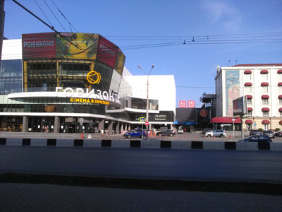
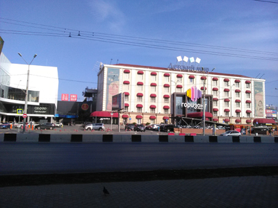
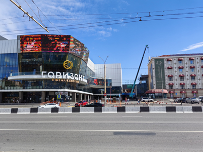
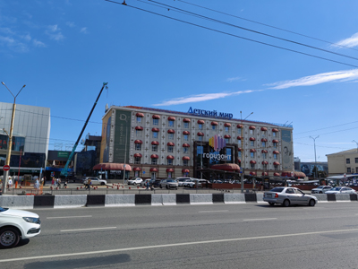

Горизонт стабилен?




Уже много лет самым крупным торгово-развлекательным центром в Ростове-на-Дону остается «Горизонт». Комплекс и правда внушительный как по размеру территории, так и по разнообразию представленных здесь магазинов и заведений. Есть и бутики дорогой брендовой одежды, и более бюджетные магазины, и всевозможные кафешки с фастфудом и кухнями разных народов, и гипермаркеты, и кинотеатр и прочие-прочие.
Расположен «Горизонт» вдоль одной из главных транспортных артерий Ростова-на-Дону — проспекта Нагибина. Близко к центру города, но в тоже время не в самом центре. Что, наверное, и к лучшему: доехать удобно со многих точек и нет дополнительной транспортной нагрузки на и без того заполненный центр.
Здесь же находится большой магазин «Детский мир». Он занимает несколько этажей и, должно быть, самый крупный из всех «Детских миров», которые когда-либо были в Ростове.




Первые фото сделаны летом 2018 года. Кстати, интересно, что в этом фотопроекте подобралось довольно много фотографий именно 2018 года. Интересно, почему так вышло? Специально я не старался так сделать. Новые фото сделаны в сентябре 2026 года. Сменилось несколько брендовых вывесок, обновили фонари на столбах и контактную линию троллейбусов, убрали четыре квадратика с крыши «Детского мира», добавили на зданиях декор в виде звездочек, довольно симпатичный, стало как-то живенько с ним. Еще убрали рекламный щит и обновили автобусную остановку.
Вот смотришь на общую картину, и кажется, будто и вовсе ничего не поменялось, почти полная стабильность внешнего вида. Но высматривая детали для описания, понимаю, что мелочей поменялось довольно много. Тоже по-своему интересно — общая картина сохранилась, а если приглядеться, то замечаешь много мелких изменений.